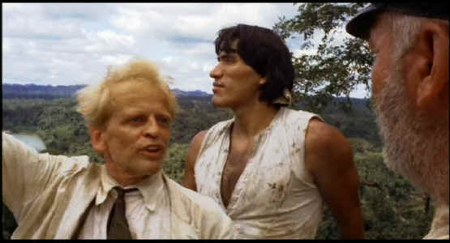

|
Fitzcarraldo (SE)/A,B+ |
|
Anchor
Bay/1982/157/ANA 1.85
|
Fitzcarraldo
is one of those once in a generation films conceived with faith and bonded together by zealous
energy. It’s a story of vision, of passion, of immutable hope and faith; faith of the
main character, faith of the filmmakers. In some ways, you have to suspect there's just a touch of Fitzcarraldo
in director Werner Herzog.
|

|
|
Fitzcarraldo urges the Indians onward.
©Anchor Bay |
The team of director Herzog and star Klaus Kinski has produced amazing work, beginning with Aguirre
the Wrath of God in 1972 and culminating sixteen years and four films later with Cobra Verde.
Fitzcarraldo is the most complete vision, both for actor and star. The often crazed Kinski's
dream in Fitzcarraldo is to build an opera house in a provincial backwater city at the cusp
of the Amazon jungle. To fund the project, Kinski must do the impossible; that is, impossible to
everyone but him. This is a fascinating saga of epic proportions. Some of the images of masses of
men pushing themselves beyond what they believe can be achieved are magnificent. Moving the ship up
and over the mountain is a Herculean feat. Filming it is nothing short of miraculous.
Kinski is nothing sort of amazing in the role of Brian Sweeney Fitzgerald
(Fitzcarraldo). I felt this was one of the actor's most controlled and consistent performances.
Claudia Cardinale has a fine role as Molly, Fitzcarraldo's woman of choice. The supporting players
surrounding Kinski are given first rate direction by Herzog.
The original music by Pavel Vuh is stirring. The liberal use of operatic scores
is too inspiring. Cinematographer Thomas Mauch captures the visionary sweep of Fitzcarraldo
with breathtaking compositions.
This is truly an outstanding audio commentary. Featuring the observations
of director Werner Herzog, a man who tells it like it is, you can learn an enormous amount about Fitzcarraldo.
Norman Hill does an excellent job of moderating the observations and producer Lucki Stipetic,
Herzog’s
brother-in-law, adds some memories. The difficulty of
mounting the daring production, the false start when Jason Robards became ill, Mick Jagger’s
supporting role, the tantrums of star Klaus Kinski are all touched upon with significant insight by
Herzog. You can watch Fitzcarraldo in English,
the language in which it was shot or in German with English sub-titles. Oddly enough, Herzog
prefers the German version even though it was dubbed. My choice is the German version for Kinski’s
voice alone. Check it out yourself before committing to the entire view. For those fascinated by
the undertaking of the filmmakers, try catching Burden of Dreams, a documentary by Les
Blank, paints a picture of inspired madness in the jungle.
Fitzcarraldo is a fine transfer, capturing the majestic vision of
the filmmakers. Color saturation is fine with excellent range of skin tones. Film grain looks
natural in tight consistent patterns. Detail is fine enough to catch the messianic gleam in
Kinski's eyes, mad pinpoints into the soul of an uncompromising visionary. Contrast range is quite
good. The overall effect is a bright transfer that unwinds effortlessly like film. The sound is
delivered in Dolby Digital 5:1 versions in both English and German, and there is a choice of mono
mixes in both languages. While the surround mix is subtle, adequate ambiance is captured, and the
music sounds regal.
|

Selections from the feature archive include articles on Akira Kurosawa,
Frank Darabont, Blonde Bimbos, Hollywood
Street Gangs, or Vietnam:
The Hollywood Pariah, and many more....
The Exquisite
Muse of Zhang Yimou

The powerful image-making of Zhang Yimou has revealed itself in
virtually every film he has made. Coupled with his remarkable collaboration with actress Gong Li,
Zhang's has built a stunning body of work Click the image to read all about it.

They may be judgmental, but that's the point, isn't it. Lots of DVD reviews plus news and more.
Click on the link to visit the judge's chambers.
 Brad Lang continues to add more interesting to the extensive collection
at Classic Movies. Everything from actors and actress to your
favorite directors is linked at the site. Brad Lang continues to add more interesting to the extensive collection
at Classic Movies. Everything from actors and actress to your
favorite directors is linked at the site.

Looking for a fix of irreverent flick dissection. Check out The Big Combo
where four guys rave and rant about movies.

A great place for movie lovers and techies to visit for exchange of
ideas. New speedy interface is an inspiration for more dialogue.
 . .
The
Movie Poster Archive include extensive poster images from the films of stars like Susan Hayward,
Kirk Douglas, Katharine Hepburn and many more. This month's featured star is Cary Grant. |